15 Anexo II - Exemplos de Analise Espacial
Neste anexo utilizaremos dois exemplos para estudar análise espacial.
ATENÇÃO
Devido a maneira que o Windows acessa as url usando a internet é necessario mudar a opção default dele para que possa usar apropiadamente os recursos https, ftps, etc… A linha abaixo deve ser utilizanda antes de usar as funções que acessam esse tipo de recurso.
Carregando as bibliotecas necessárias:
library(tidyverse)
library(sf)
library(maptools)
library(spatialreg)
library(spatstat)
library(tmap)
library(spdep)
library(spgwr)
library(RColorBrewer)
library(colorspace)15.1 Exemplo com os dados de dengue em Dourados/MS
Neste exeplo serão utilizados os dados da monografia de Isis Rodrigues Reitman, apresentada ao Curso de Geografia da Faculdade de Ciências Humanas da Universidade Federal da Grande Douradosos/MS, em março de 2013. O título da monografia é “DISTRIBUIÇÃO ESPACIAL DOS CASOS DE DENGUE NO PERÍMETRO URBANO DE DOURADOS-MS E SUA RELAÇÃO COM OS FATORES SOCIOAMBIENTAIS E POLÍTICOS”.
Lendo a tabela da população por setor censitário e baixando os shapefiles do contorno e por setor censitário de Dourados/MS:
local <- "https://raw.githubusercontent.com/ogcruz/dados_eco_2023/main/dados/"
pop2010 <- read_csv(paste0(local, "pop2010.csv"))
tmpdir <- tempdir()
download.file(paste0(local, "setores_dourados.zip"),
destfile = paste0(tmpdir, "/dourados.zip"))
unzip(zipfile = paste0(tmpdir, "/dourados.zip"), exdir = tmpdir)
dir(tmpdir)## [1] "35municipality_2010_simplified.gpkg" "contorno.dbf" "contorno.sbn" "contorno.sbx" "contorno.shp" "contorno.shx" "dourados.zip"
## [8] "file5f7fa6a0d7202" "metadata_gpkg.csv" "neighborhoods_2010_simplified.gpkg" "olinda.dbf" "olinda.shp" "olinda.shx" "olinda.zip"
## [15] "Setor_UTM_SIRGAS.dbf" "Setor_UTM_SIRGAS.prj" "Setor_UTM_SIRGAS.sbn" "Setor_UTM_SIRGAS.sbx" "Setor_UTM_SIRGAS.shp" "Setor_UTM_SIRGAS.shx"setor.sf <- read_sf(paste0(tmpdir, "/Setor_UTM_SIRGAS.shp"),
crs = 31981)
contorno.sf <- read_sf(paste0(tmpdir, "/contorno.shp"),
crs = 31981)Juntando com os dados de setores censitários e população:
setor.sf <- setor.sf %>%
mutate(idsetor = as.numeric(CD_GEOCODI)) %>%
inner_join(pop2010, by = "idsetor")Lendo e plotando os casos de dengue georreferenciados em Dourados/MS:
casos <- read_csv(paste0(local, "dengue_dourados.csv"))
casos.sf <- st_as_sf(casos, coords = c("X", "Y"), crs = 31981)
ggplot(setor.sf) + geom_sf(fill = "white", color = "black") +
geom_sf(data = casos.sf, color = "red", size = 1) +
theme_void()
Lendo e plotando os os pontos de coleta de lixo georreferenciados em Dourados/MS:
lixo <- read_csv2(paste0(local, "/lixo_dourados.csv"))
lixo.sf <- st_as_sf(lixo, coords = c("X", "Y"), crs = 31981)
ggplot(setor.sf) + geom_sf(fill = "white", color = "black") +
geom_sf(data = lixo.sf, color = "blue", size = 1) +
theme_void()
Como podemos observar, existem alguns pontos de coleta de lixo fora do contorno de Dourados/MS. Uma forma de ficarmos só com os pontos dentro do polígono é utilizando o comando st_intersection.
lixo2.sf <- st_intersection(contorno.sf, lixo.sf)
# ou lixo2.sf <- st_intersection(setor.sf,
# lixo.sf)
ggplot(setor.sf) + geom_sf(fill = "white", color = "black") +
geom_sf(data = lixo2.sf, color = "blue", size = 1) +
theme_void()
Verificando as paletas de cores.

Utilizando as informações dos casos (pontos), do lixo (ponto) e da população de cada setor censitário (mapa temático):
ggplot(setor.sf) + geom_sf(aes(fill = pop)) + geom_sf(data = casos.sf,
size = 0.7, alpha = 0.9, aes(colour = "Caso"),
show.legend = "point") + geom_sf(data = lixo2.sf,
size = 1, alpha = 0.9, aes(colour = "Lixo"), show.legend = "point") +
scale_fill_distiller(palette = "PuBu", direction = 1) +
scale_colour_manual(values = c(Caso = "red", Lixo = "green")) +
theme_minimal()
Iremos agora construir buffers de 500m de distância ao redor de cada ponto de coleta de lixo. Isso é interessante para verificar se os casos de dengue ocorrem em um raio de até 500m de distância dos pontos de coleta de lixo. Ou seja, a pergunta é, será que a distância dos pontos de coeta de lixo influenciam a ocorrência do caso de dengue?
Buffers: São polígonos que contornam um objeto a uma determinada distância. Sua principal função é materializar os conceitos de “perto” e “longe”.
lixo_buffer <- st_buffer(lixo2.sf, 500)
ggplot(setor.sf) + geom_sf(aes(fill = pop)) + geom_sf(data = casos.sf,
size = 0.7, alpha = 0.9, aes(colour = "Caso"),
show.legend = "point") + geom_sf(data = lixo2.sf,
size = 1, alpha = 0.9, aes(colour = "Lixo"), show.legend = "point") +
scale_fill_distiller(palette = "PuBu", direction = 1) +
geom_sf(data = lixo_buffer, color = "grey20", fill = "transparent",
size = 0.4) + scale_colour_manual(values = c(Caso = "red",
Lixo = "green")) + theme_minimal()
Represntando os casos e o lixo de forma interativa.
tm_shape(setor.sf) + tm_borders("black") + tm_shape(casos.sf) +
tm_dots("red") + tm_shape(lixo.sf) + tm_dots("green") +
tm_shape(lixo_buffer) + tm_borders("blue") + tmap_mode("plot")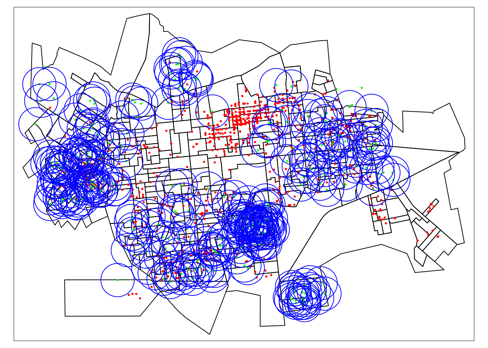
## conta casos por setor
casos.sf$contador <- 1
casos <- setor.sf %>%
st_join(casos.sf) %>%
filter(CLASSI_FIN == 1) %>% ## seleciona somente os casos confirmados
group_by(ID) %>%
summarise(casos = sum(contador))
st_geometry(casos) <- NULL ## remove atributos de geometria
## numero de depositos de Lixo por setor
lixo.sf$contador <- 1
lixo <- setor.sf %>%
st_join(lixo.sf) %>%
group_by(ID) %>%
summarise(lixo = sum(contador))
st_geometry(lixo) <- NULL ## remove atributos de geometria
# Inserindo as contagens dos casos e de pontos de coleta de lixo no atributo com a geometria.
setor.sf <- setor.sf %>%
left_join(lixo,by = 'ID') %>%
left_join(casos,by = 'ID') Plotando o mapa temático dos casos por setor censitário:
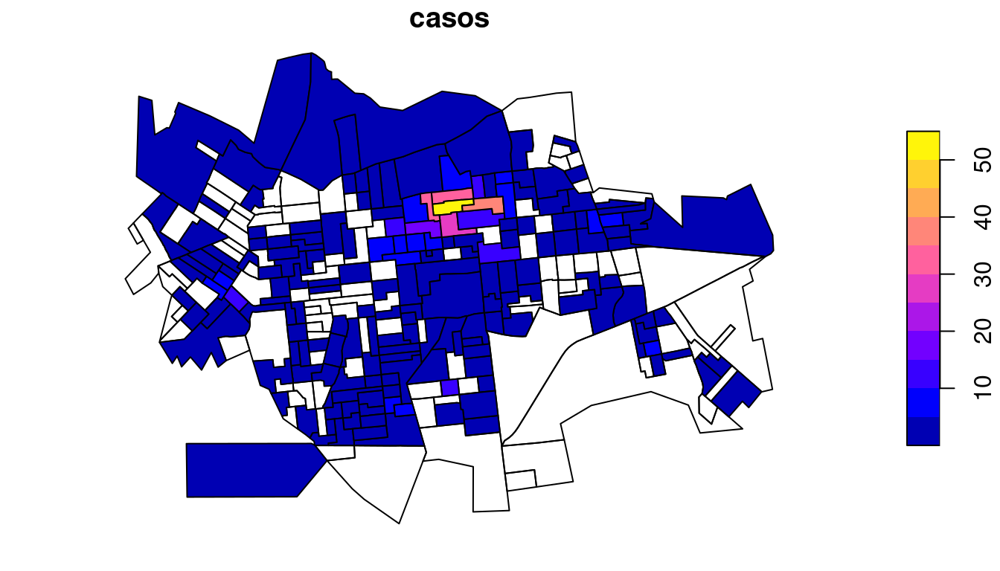
Plotando o mapa temático dos pontos de coleta de lixo por setor censitário:
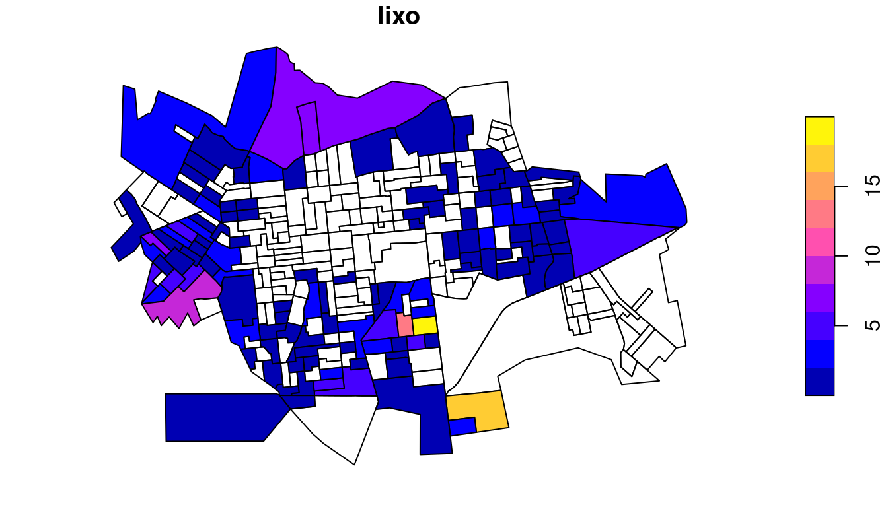
Calculando a taxa de incidência e plotando o mapa temático dos pontos de coleta de lixo por setor censitário:
setor.sf$tx <- (setor.sf$casos/setor.sf$pop) * 1000
setor.sf$tx[is.na(setor.sf$tx)] <- 0 # Transformando os missings em zero
summary(setor.sf$tx)## Min. 1st Qu. Median Mean 3rd Qu. Max.
## 0.00 0.00 1.74 4.06 4.31 56.40pal <- wesanderson::wes_palette("Moonrise3", 20, type = "continuous")
ggplot(setor.sf) + geom_sf(aes(fill = tx), color = "black") +
scale_fill_gradientn(colours = pal) + ggtitle("Taxa de incidência de Dengue") +
theme_void()
15.2 Kernel por atributos
Vamos plotar o kernel por atributos referente a taxa de incidência de dengue em Dourados/MS.
Primeiramente é necessário dissolver os poligonos em formato sf para obter o contorno. Nesse caso queremos preservar o atributo AREA

Extraindo os centróidas dos polígonos em Dourados/MS.
centroides <- st_centroid(st_geometry(setor.sf))
# Transformando em os centróides em formato sp
centroides.sp <- as.data.frame(as_Spatial(centroides))
names(centroides.sp) <- c("X", "Y")
plot(centroides.sp)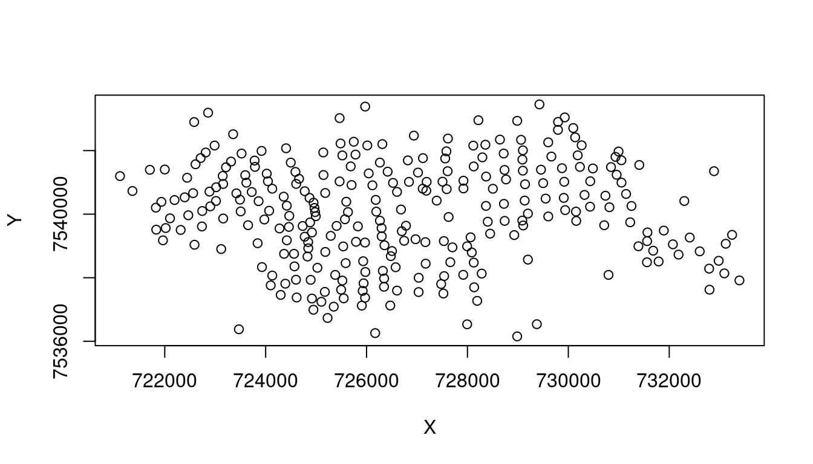
Colocando os pontos no formato sp:
centroides.ppp <- ppp(centroides.sp$X, centroides.sp$Y,
dourados.w)
plot(centroides.ppp, pch = 19, cex = 0.5)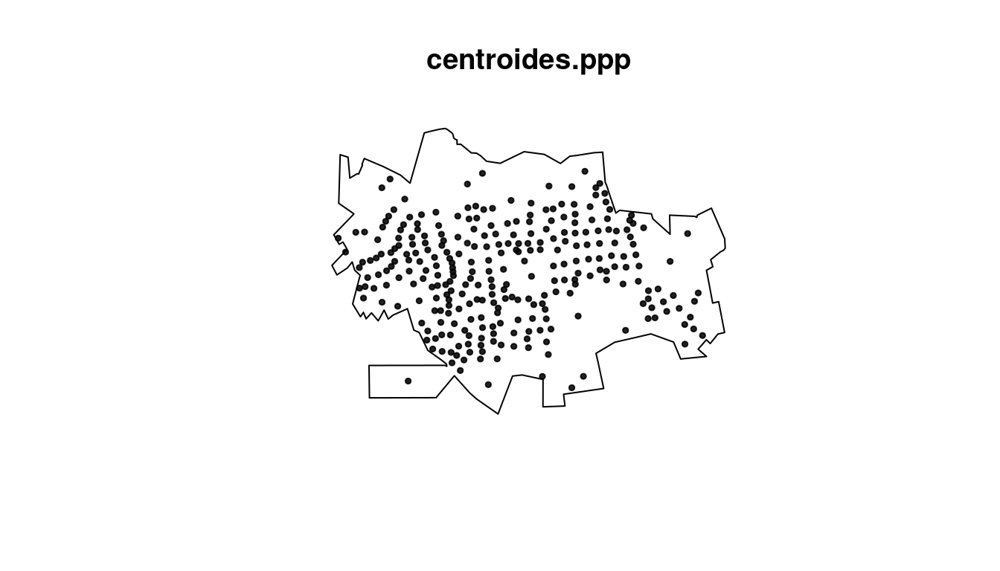
Fazendo o kernel por atributo da taxa:
kernel.tx <- density(centroides.ppp, 500, weights = setor.sf$tx,
scalekernel = TRUE)
plot(kernel.tx)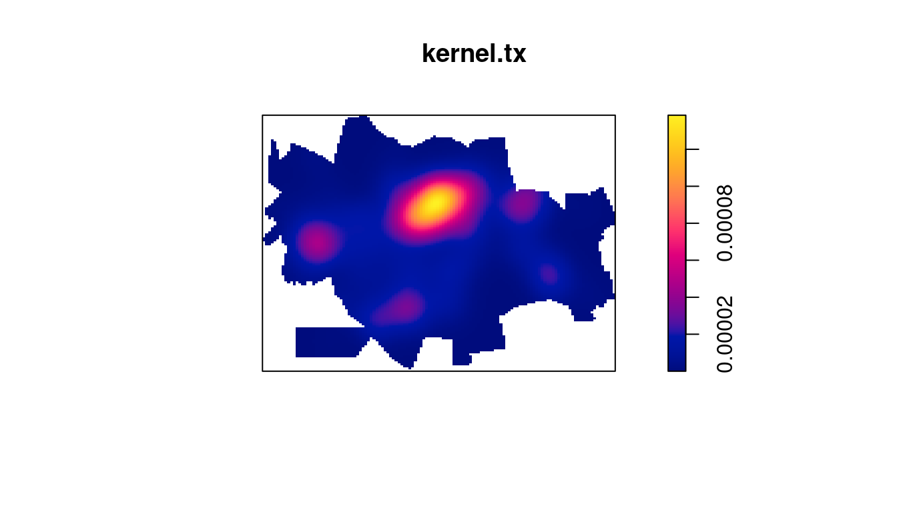
15.3 Exemplo com os dados de dengue em Pernambuco
Nesta prática serão utilizados os dados de dengue por município no estado de Pernambuco. Os dados foram organizados por Freitas et al. (2021).
Agora vamos ler os dados e o polígono de Pernambuco.
Verificando os objetos:
## # A tibble: 6 × 8
## ID_MUNICIP year Population dengue zika chikungunya microcephaly live_births
## <dbl> <dbl> <dbl> <dbl> <dbl> <dbl> <dbl> <dbl>
## 1 260005 2013 96769. 14 0 0 0 1532
## 2 260005 2014 96831. 23 0 0 0 1526
## 3 260005 2015 96907. 54 0 0 5 1628
## 4 260005 2016 96880. 23 0 29 2 1487
## 5 260005 2017 96828. 0 0 10 0 1519
## 6 260010 2013 36182. 0 0 0 0 638## ID_MUNICIP year Population dengue zika chikungunya microcephaly live_births
## Min. :260005 Min. :2013 Min. : 4475 Min. : 0 Min. : 0.00 Min. : 0 Min. : 0.00 Min. : 50
## 1st Qu.:260419 1st Qu.:2014 1st Qu.: 14295 1st Qu.: 0 1st Qu.: 0.00 1st Qu.: 0 1st Qu.: 0.00 1st Qu.: 203
## Median :260822 Median :2015 Median : 22735 Median : 5 Median : 0.00 Median : 0 Median : 0.00 Median : 334
## Mean :260825 Mean :2015 Mean : 50606 Mean : 140 Mean : 0.18 Mean : 36 Mean : 0.89 Mean : 757
## 3rd Qu.:261232 3rd Qu.:2016 3rd Qu.: 38049 3rd Qu.: 38 3rd Qu.: 0.00 3rd Qu.: 1 3rd Qu.: 1.00 3rd Qu.: 594
## Max. :261650 Max. :2017 Max. :1599273 Max. :24793 Max. :93.00 Max. :9209 Max. :87.00 Max. :23664## Simple feature collection with 184 features and 2 fields
## Geometry type: POLYGON
## Dimension: XY
## Bounding box: xmin: -41.36 ymin: -9.483 xmax: -34.81 ymax: -7.273
## Geodetic CRS: WGS 84
## # A tibble: 184 × 3
## NM_MUNICIP CD_GEOCMU geom
## * <chr> <chr> <POLYGON [°]>
## 1 ABREU E LIMA 2600054 ((-35.05 -7.88, -35.02 -7.888, -35.02 -7.888, -35 -7.894, -35 -7.895, -34.98 -7.9, -34.94...
## 2 AFOGADOS DA INGAZEIRA 2600104 ((-37.56 -7.639, -37.56 -7.64, -37.56 -7.641, -37.56 -7.642, -37.56 -7.643, -37.56 -7.644...
## 3 AFRÂNIO 2600203 ((-40.86 -8.371, -40.85 -8.446, -40.85 -8.459, -40.85 -8.462, -40.85 -8.526, -40.85 -8.55...
## 4 AGRESTINA 2600302 ((-35.92 -8.366, -35.9 -8.375, -35.9 -8.375, -35.9 -8.381, -35.9 -8.384, -35.9 -8.384, -3...
## 5 ÁGUA PRETA 2600401 ((-35.47 -8.546, -35.47 -8.545, -35.47 -8.549, -35.46 -8.549, -35.46 -8.549, -35.46 -8.54...
## 6 ÁGUAS BELAS 2600500 ((-36.87 -8.887, -36.87 -8.888, -36.87 -8.893, -36.87 -8.895, -36.87 -8.905, -36.87 -8.90...
## 7 ALAGOINHA 2600609 ((-36.76 -8.599, -36.76 -8.6, -36.77 -8.603, -36.77 -8.602, -36.77 -8.602, -36.78 -8.603,...
## 8 ALIANÇA 2600708 ((-35.16 -7.503, -35.15 -7.506, -35.15 -7.507, -35.15 -7.509, -35.15 -7.51, -35.14 -7.51,...
## 9 ALTINHO 2600807 ((-35.97 -8.536, -36 -8.547, -36 -8.547, -36 -8.547, -36 -8.534, -36 -8.534, -36 -8.534, ...
## 10 AMARAJI 2600906 ((-35.41 -8.428, -35.41 -8.427, -35.41 -8.427, -35.41 -8.426, -35.41 -8.426, -35.41 -8.42...
## # ℹ 174 more rows
Calculando a incidência de dengue acumulada 2013-2017 e verificando a distribuição:
dengue <- dzc %>%
group_by(ID_MUNICIP) %>%
summarise(pop = mean(Population), dengue = sum(dengue),
inc = (dengue/pop) * 10000)
par(mfrow = c(1, 2))
hist(dengue$inc)
hist(log(dengue$inc))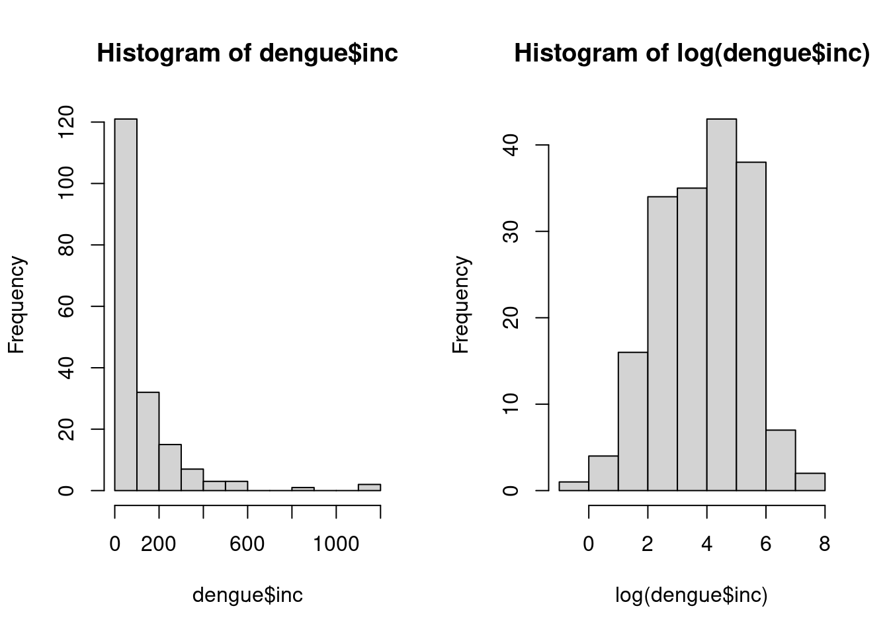
par(mfrow = c(1, 1))
ggplot(dengue, aes(log(inc))) + geom_histogram(aes(y = ..density..),
colour = "black", fill = "grey90") + geom_density(fill = "purple",
alpha = 0.2) + theme_minimal()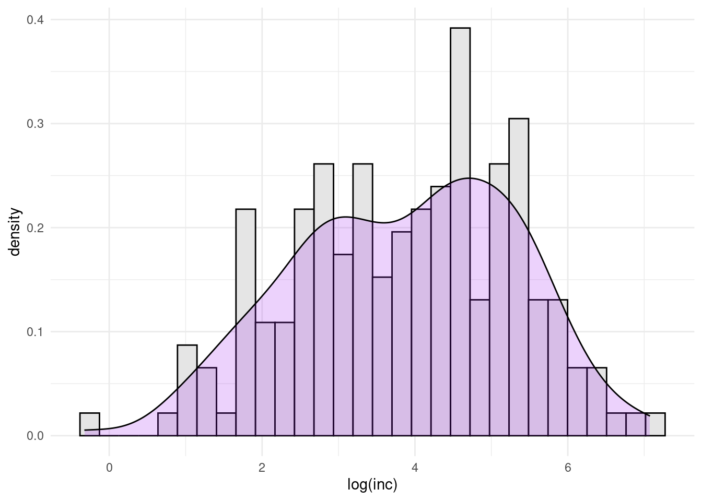
Agora vamos juntar os dados de dengue com o polígono de Pernambuco. Observe que a variável ID_MUNICIP do objeto com os dados dos casos tem 6 dígitos, enquanto que a variável CD_GEOCMU do polígono tem 7 dígitos. Porém, os 6 primeiros dígitos de CD_GEOCMU são correspondentes à variável ID_MUNICIP. É comum encontrar essa situação quando trabalhamos com dados do IBGE e do SINAN.
Portanto, vamos criar a variável ID_MUNICIP no polígono, e juntar com o objeto de casos:
PE2 <- PE %>%
rename(ID_MUNICIP = CD_GEOCMU) %>%
mutate(ID_MUNICIP = as.numeric(str_sub(ID_MUNICIP,
1, 6))) %>%
left_join(dengue, by = "ID_MUNICIP")Agora vamos ver o mapa das incidências:
g1 <- ggplot(PE2) + geom_sf(aes(fill = cut_number(inc,
5)), size = 0.2) + scale_fill_discrete_sequential(palette = "Reds",
name = "casos\npor 10000") + labs(title = "Incidência de dengue em Pernambuco, 2013-2017") +
theme_void()
g2 <- ggplot(PE2, aes(inc)) + geom_density(fill = "red",
alpha = 0.2) + geom_vline(xintercept = quantile(PE2$inc,
probs = seq(0, 1, by = 0.2)), color = "red", linetype = "dashed") +
theme(plot.margin = margin(3, 1, 1, 1, "cm"))
ggpubr::ggarrange(g1, g2, nrow = 1, widths = c(6.5,
3.5))
15.4 Matriz de Vizinhança
Iremos precisar da coordenadas dos centróides:
Criando e verificando a vizinhança de Pernambuco:
# Convertendo para Spatial Polygons para usar
# poly2nb
PE.sp <- as_Spatial(PE)
# Criando a vizinhança
viz <- poly2nb(PE.sp)
viz## Neighbour list object:
## Number of regions: 184
## Number of nonzero links: 948
## Percentage nonzero weights: 2.8
## Average number of links: 5.152Fazendo o mapa com a vizinhança:
# Transformando a vizinhança em linhas para
# plotar
viz.sf <- nb2lines(viz, coords = coordenadas, as_sf = TRUE)
viz.sf <- st_set_crs(viz.sf, st_crs(PE))
# Plotando o mapa de conectividade por
# contiguidade
ggplot() + geom_sf(data = PE, fill = "salmon", size = 0.2,
color = "white") + geom_sf(data = centroides, size = 1) +
geom_sf(data = viz.sf, size = 0.2) + ggtitle("Vizinhança por conectividade") +
ylab("Latitude") + xlab("Longitude") + theme_minimal()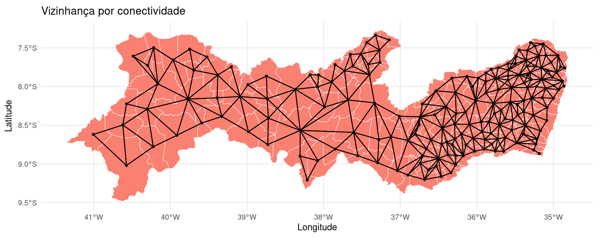
15.5 Autocorrelação Espacial
Verificando a correlação da incidência de dengue em Pernambuco.
##
## Moran I test under randomisation
##
## data: PE2$inc
## weights: pesos.viz
##
## Moran I statistic standard deviate = 3.2, p-value = 0.0006
## alternative hypothesis: greater
## sample estimates:
## Moran I statistic Expectation Variance
## 0.140386 -0.005464 0.002022Plotando o correlograma:
## Spatial correlogram for PE2$inc
## method: Moran's I
## estimate expectation variance standard deviate Pr(I) two sided
## 1 (184) 0.140386 -0.005464 0.002022 3.24 0.0012 **
## 2 (184) 0.008862 -0.005464 0.000977 0.46 0.6467
## 3 (184) 0.050621 -0.005464 0.000724 2.08 0.0372 *
## 4 (184) 0.017289 -0.005464 0.000643 0.90 0.3694
## 5 (184) -0.048713 -0.005464 0.000640 -1.71 0.0873 .
## 6 (184) -0.014771 -0.005464 0.000629 -0.37 0.7106
## 7 (184) 0.031309 -0.005464 0.000617 1.48 0.1387
## 8 (184) -0.020329 -0.005464 0.000669 -0.57 0.5655
## ---
## Signif. codes: 0 '***' 0.001 '**' 0.01 '*' 0.05 '.' 0.1 ' ' 1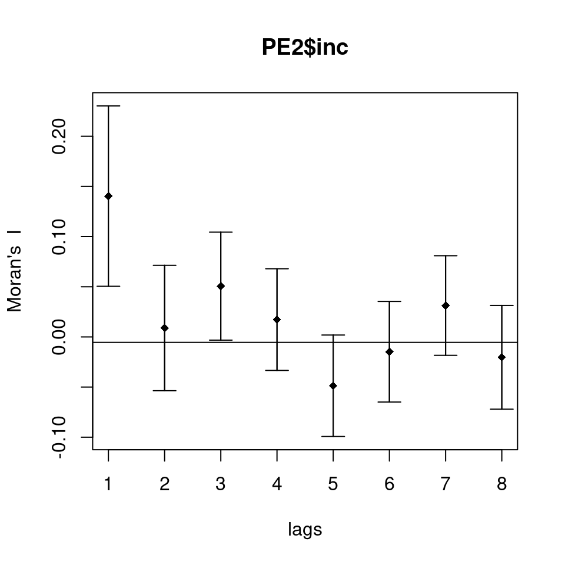
Mapeando os polígonos que tiveram os p-valores mais significativos no Moran Local:
PE2$pval <- localmoran(PE2$inc, pesos.viz)[, 5]
tm_shape(PE2) + tm_polygons(col = "pval", title = "p-valores",
breaks = c(0, 0.01, 0.05, 0.1, 1), border.col = "white",
palette = "-Oranges") + tm_scale_bar(width = 0.15) +
tm_layout(frame = FALSE) + tmap_mode("plot")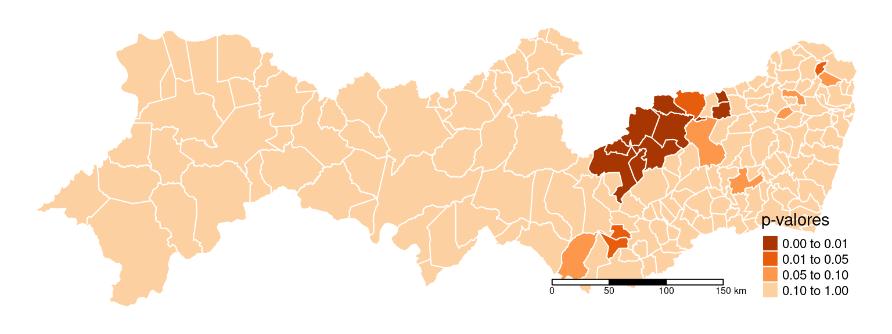
Moran Local (Lisa Map) da incidência:
## Local Morans I Stand. dev. (N) Pr. (N) Saddlepoint Pr. (Sad) Expectation Variance Skewness Kurtosis Minimum Maximum omega sad.r sad.u
## 1 1 -0.122210 -0.26537 1.2093 -0.44298 0.6578 -0.005464 0.1935 -0.07213 8.624 -40.97 39.97 -0.00303917 -0.259013 -0.271654
## 2 2 -0.170546 -0.33470 1.2621 -0.53962 0.5895 -0.005464 0.2433 -0.06434 8.624 -45.87 44.87 -0.00331024 -0.323850 -0.347289
## 3 3 0.072842 0.11165 0.9111 0.18386 0.8541 -0.005464 0.4919 -0.04525 8.622 -65.02 64.02 0.00085244 0.110805 0.111706
## 4 4 -0.007457 -0.00453 1.0036 -0.02005 0.9840 -0.005464 0.1935 -0.07213 8.624 -40.97 39.97 -0.00005565 -0.004505 -0.004506
## 5 5 0.299109 0.88311 0.3772 1.11828 0.2634 -0.005464 0.1189 -0.09200 8.627 -32.23 31.23 0.00941159 0.788180 1.022395PE2$MoranLocal <- summary(resI)[, 1]
ggplot(PE2) + geom_sf(aes(fill = MoranLocal), color = "black",
size = 0.2) + scale_fill_continuous_diverging(palette = "Blue-Red 3",
mid = 0) + ggtitle("Moran local") + theme_void()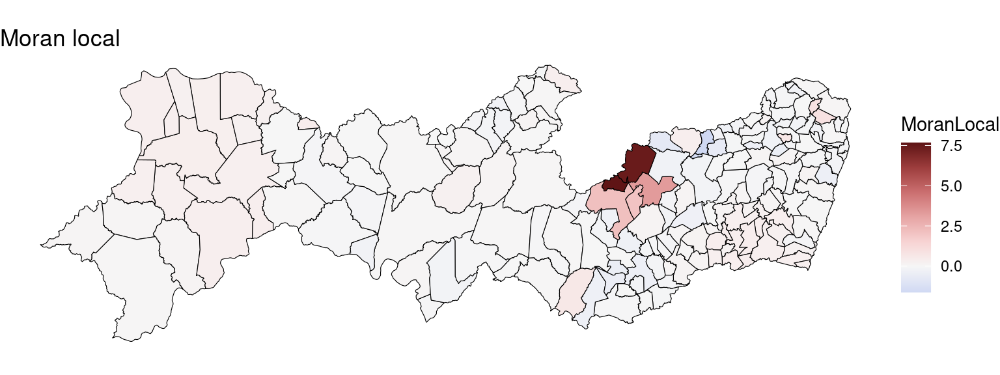
15.6 Modelos Linear, CAR e GWR
Agora vamos utilizar o IDH para explorar os modelos.
Primeiro, vamos visualizar o IDH por município e comparar com o mapa de incidência de dengue.
## # A tibble: 6 × 2
## ID_MUNICIP IDHM
## <dbl> <dbl>
## 1 260005 0.679
## 2 260010 0.657
## 3 260020 0.588
## 4 260030 0.592
## 5 260040 0.553
## 6 260050 0.526PE2 <- PE2 %>%
left_join(idh)
g3 <- ggplot(PE2) + geom_sf(aes(fill = IDHM), size = 0.2) +
scale_fill_continuous_sequential(palette = "Viridis",
name = "IDH") + labs(title = "IDH, 2010") +
theme_void()
ggpubr::ggarrange(g1, g3, nrow = 2)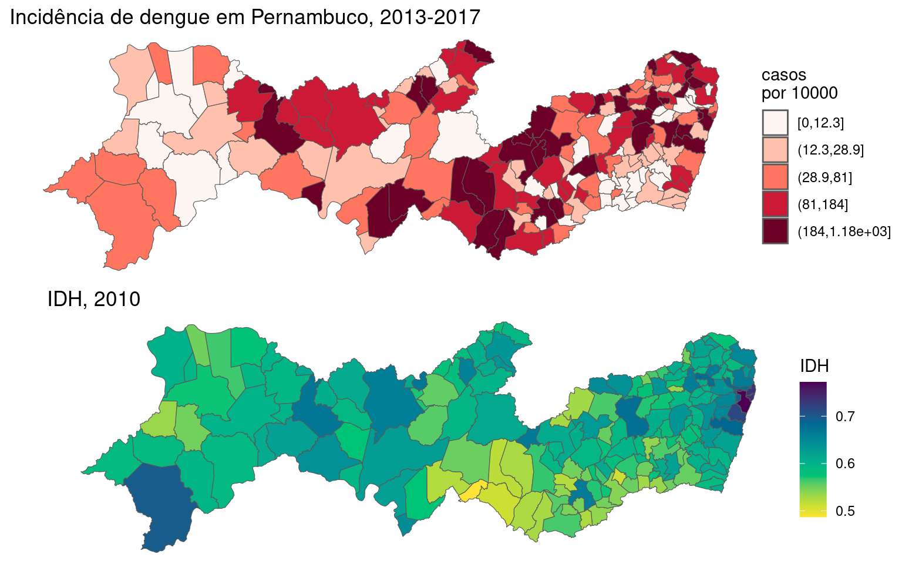
Ajustando o modelo de regressão linear simples.
##
## Call:
## lm(formula = log(inc + 1) ~ IDHM, data = PE2)
##
## Residuals:
## Min 1Q Median 3Q Max
## -3.740 -1.001 0.065 1.142 3.538
##
## Coefficients:
## Estimate Std. Error t value Pr(>|t|)
## (Intercept) 0.576 1.414 0.41 0.684
## IDHM 5.474 2.369 2.31 0.022 *
## ---
## Signif. codes: 0 '***' 0.001 '**' 0.01 '*' 0.05 '.' 0.1 ' ' 1
##
## Residual standard error: 1.46 on 182 degrees of freedom
## Multiple R-squared: 0.0285, Adjusted R-squared: 0.0232
## F-statistic: 5.34 on 1 and 182 DF, p-value: 0.0219Checando os residuos para verificar a presença de autocorrelação.
##
## Moran I test under randomisation
##
## data: dengue.lm$lmresid
## weights: pesos.viz
##
## Moran I statistic standard deviate = 3.8, p-value = 0.00007
## alternative hypothesis: greater
## sample estimates:
## Moran I statistic Expectation Variance
## 0.174454 -0.005464 0.002233Ajustando o modelo CAR.
dengue.car <- spautolm(log(inc + 1) ~ IDHM, data = PE2,
listw = pesos.viz, family = "CAR")
summary(dengue.car)##
## Call: spautolm(formula = log(inc + 1) ~ IDHM, data = PE2, listw = pesos.viz, family = "CAR")
##
## Residuals:
## Min 1Q Median 3Q Max
## -3.957162 -0.944274 0.069071 1.082266 3.519477
##
## Coefficients:
## Estimate Std. Error z value Pr(>|z|)
## (Intercept) -1.7043 1.5392 -1.1073 0.2681616
## IDHM 9.1806 2.5812 3.5567 0.0003756
##
## Lambda: 0.4945 LR test value: 9.016 p-value: 0.0026767
## Numerical Hessian standard error of lambda: 0.1806
##
## Log likelihood: -324.8
## ML residual variance (sigma squared): 1.943, (sigma: 1.394)
## Number of observations: 184
## Number of parameters estimated: 4
## AIC: NA (not available for weighted model)Checando os residuos para verificar a presença de autocorrelação.
##
## Moran I test under randomisation
##
## data: dengue.car$carresid
## weights: pesos.viz
##
## Moran I statistic standard deviate = -1.5, p-value = 0.9
## alternative hypothesis: greater
## sample estimates:
## Moran I statistic Expectation Variance
## -0.078140 -0.005464 0.002231Ajustando o modelo GWR.
Precisamos estimar a largura de banda “ideal”.
## Adaptive q: 0.382 CV score: 381.1
## Adaptive q: 0.618 CV score: 387.6
## Adaptive q: 0.2361 CV score: 373.9
## Adaptive q: 0.1459 CV score: 364.4
## Adaptive q: 0.09017 CV score: 356
## Adaptive q: 0.05573 CV score: 355.6
## Adaptive q: 0.06991 CV score: 356.2
## Adaptive q: 0.03444 CV score: 364.3
## Adaptive q: 0.0476 CV score: 357.6
## Adaptive q: 0.06115 CV score: 355.4
## Adaptive q: 0.06449 CV score: 355.4
## Adaptive q: 0.06187 CV score: 355.4
## Adaptive q: 0.06224 CV score: 355.4
## Adaptive q: 0.06215 CV score: 355.4
## Adaptive q: 0.0622 CV score: 355.4
## Adaptive q: 0.06211 CV score: 355.4
## Adaptive q: 0.06215 CV score: 355.4## [1] 0.06215Ajustando o modelo:
dengue.gwr <- gwr(log(inc + 1) ~ IDHM, data = PE2,
coords = coordenadas, adapt = GWRbanda, hatmatrix = TRUE,
se.fit = TRUE)
dengue.gwr## Call:
## gwr(formula = log(inc + 1) ~ IDHM, data = PE2, coords = coordenadas,
## adapt = GWRbanda, hatmatrix = TRUE, se.fit = TRUE)
## Kernel function: gwr.Gauss
## Adaptive quantile: 0.06215 (about 11 of 184 data points)
## Summary of GWR coefficient estimates at data points:
## Min. 1st Qu. Median 3rd Qu. Max. Global
## X.Intercept. -9.94 -4.51 -1.31 2.25 6.44 0.58
## IDHM -4.01 3.20 8.74 13.56 22.62 5.47
## Number of data points: 184
## Effective number of parameters (residual: 2traceS - traceS'S): 23.35
## Effective degrees of freedom (residual: 2traceS - traceS'S): 160.6
## Sigma (residual: 2traceS - traceS'S): 1.358
## Effective number of parameters (model: traceS): 16.77
## Effective degrees of freedom (model: traceS): 167.2
## Sigma (model: traceS): 1.331
## Sigma (ML): 1.269
## AICc (GWR p. 61, eq 2.33; p. 96, eq. 4.21): 649.4
## AIC (GWR p. 96, eq. 4.22): 626.6
## Residual sum of squares: 296.3
## Quasi-global R2: 0.2549Colocando a saída do modelo dentro de um dataframe:
## sum.w X.Intercept. IDHM X.Intercept._se IDHM_se gwr.e pred pred.se localR2 X.Intercept._se_EDF IDHM_se_EDF pred.se.1 X Y
## 1 14.88 0.7623 5.026 3.386 5.226 -1.6280 4.175 0.3164 0.07349 3.455 5.332 0.3228 -35.02 -7.879
## 2 14.64 -0.5301 7.412 4.686 7.820 1.3988 4.339 0.5436 0.07056 4.781 7.978 0.5547 -37.62 -7.737
## 3 18.21 -3.7654 12.055 4.043 6.769 0.7456 3.323 0.2477 0.33591 4.125 6.906 0.2528 -41.01 -8.619
## 4 23.48 -3.8527 12.241 3.466 5.954 1.4915 3.394 0.2101 0.22686 3.536 6.075 0.2144 -35.95 -8.457
## 5 19.53 -6.4564 15.852 3.695 6.265 0.5644 2.310 0.3167 0.22434 3.770 6.392 0.3231 -35.48 -8.729
## 6 20.67 5.7463 -2.824 2.921 5.135 1.1993 4.261 0.2978 0.17956 2.980 5.239 0.3039 -37.04 -9.087Checando os residuos para verificar a presença de autocorrelação para o modelo GWR:
##
## Moran I test under randomisation
##
## data: results$residuos
## weights: pesos.viz
##
## Moran I statistic standard deviate = -0.064, p-value = 0.5
## alternative hypothesis: greater
## sample estimates:
## Moran I statistic Expectation Variance
## -0.008494 -0.005464 0.002231Definindo as paletes de cores para a construção dos mapas.
Mapa dos coeficientes de regressão para a variável IDHM.
PE2$coef.IDH <- results$IDHM
PE2$localR2 <- results$localR2
PE2$pred.gwr <- results$pred
map.idh <- ggplot(PE2) + geom_sf(aes(fill = coef.IDH),
color = "black", size = 0.2) + scale_fill_gradientn(colours = pal) +
ggtitle("Distribuição dos coeficientes da variável IDH") +
theme_void()Mapeando os coeficientes de regressão para a variável IDHM por significância através do teste de Wald.
# Calculando a estatística de wald
PE2$wald.teste <- abs(results$IDHM/results$IDHM_se)
# Dicotomizando a estatística de wald
PE2$wald.teste <- ifelse(PE2$wald.teste < 2, 0, 1)
map.wald <- ggplot(PE2) + geom_sf(aes(fill = factor(wald.teste)),
color = "black", size = 0.2) + scale_fill_manual(values = c("white",
"purple"), labels = c("< 2", ">= 2"), name = "Wald") +
ggtitle("Coef. IDH significativos") + theme_void()
gridExtra::grid.arrange(map.idh, map.wald, nrow = 2)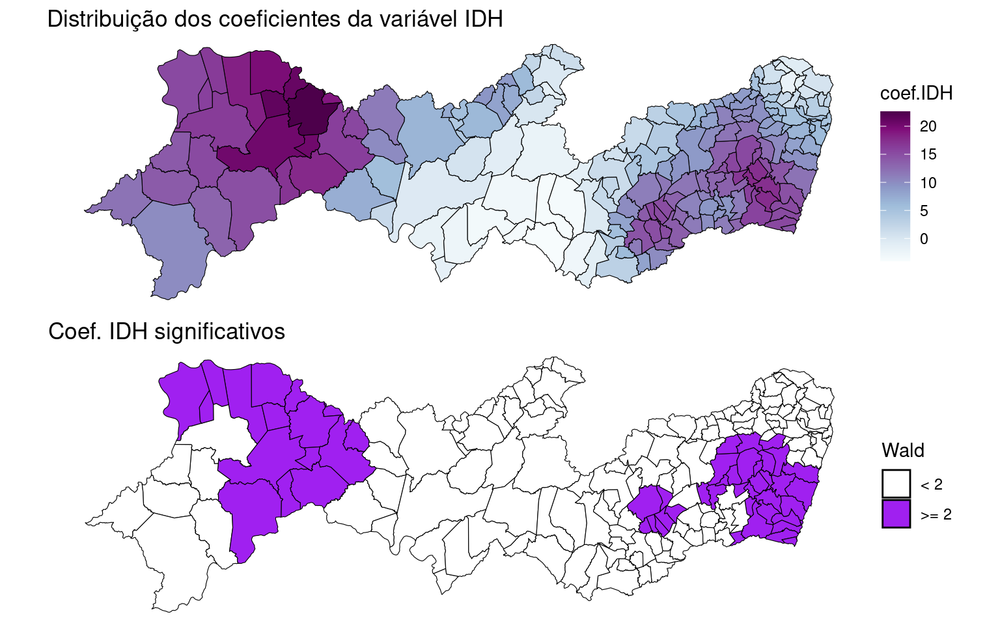
Mapa dos coeficientes de determinação regionalizados (\(R^2\) local).
pal <- brewer.pal(n = 10, name = "YlOrRd")
ggplot(PE2) + geom_sf(aes(fill = localR2), color = "black",
size = 0.2) + scale_fill_gradientn(colours = pal) +
ggtitle("R² local") + theme_void()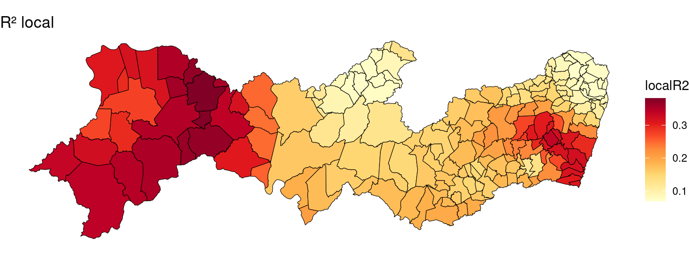
Mapeando os valores observados e preditos dos modelos ajustados.
# quantile(log(PE2$inc+1),seq(0,1,by=0.2))
breaks <- c(-1, quantile(log(PE2$inc + 1), seq(0, 1,
by = 0.2)))
labels <- c("[0]", "(0-2.6]", "(2.6-3.4]", "(3.4-4.4]",
"(4.4-5.2]", "> 5.2")
PE2$brks <- cut(log(PE2$inc + 1), include.lowest = FALSE,
right = TRUE, breaks = breaks, labels = labels)
bruta <- ggplot(PE2) + geom_sf(aes(fill = brks), color = "black",
size = 0.2) + ggtitle("Log da Incidência") + scale_fill_discrete_sequential(palette = "Heat2",
c1 = 80, c2 = 30, l1 = 30, l2 = 90, p1 = 0.2, p2 = 1.5,
na.value = "grey75", drop = FALSE, name = "") +
theme_void()
PE2$brks.lm <- cut(dengue.lm$fitted.values, lowest = FALSE,
right = TRUE, breaks = breaks, labels = labels)
pred.lm <- ggplot(PE2) + geom_sf(aes(fill = brks.lm),
color = "black", size = 0.2) + ggtitle("Predito - LM") +
scale_fill_discrete_sequential(palette = "Heat2",
c1 = 80, c2 = 30, l1 = 30, l2 = 90, p1 = 0.2,
p2 = 1.5, na.value = "grey75", drop = FALSE,
name = "") + theme_void()
PE2$brks.car <- cut(dengue.car$fit$fitted.values, lowest = FALSE,
right = TRUE, breaks = breaks, labels = labels)
pred.car <- ggplot(PE2) + geom_sf(aes(fill = brks.car),
color = "black", size = 0.2) + ggtitle("Predito - CAR") +
scale_fill_discrete_sequential(palette = "Heat2",
c1 = 80, c2 = 30, l1 = 30, l2 = 90, p1 = 0.2,
p2 = 1.5, na.value = "grey75", drop = FALSE,
name = "") + theme_void()
PE2$brks.gwr <- cut(results$pred, lowest = FALSE, right = TRUE,
breaks = breaks, labels = labels)
pred.gwr <- ggplot(PE2) + geom_sf(aes(fill = brks.gwr),
color = "black", size = 0.2) + ggtitle("Predito - GWR") +
scale_fill_discrete_sequential(palette = "Heat2",
c1 = 80, c2 = 30, l1 = 30, l2 = 90, p1 = 0.2,
p2 = 1.5, na.value = "grey75", drop = FALSE,
name = "") + theme_void()
ggpubr::ggarrange(bruta, pred.lm, pred.car, pred.gwr,
ncol = 1, common.legend = TRUE, legend = "right")
Verificando a distribuição dos resíduos:
vioplot::vioplot(dengue.lm$residuals, dengue.car$fi$residuals,
results$residuos, names = c("LM", "CAR", "GWR"),
col = "orange")
title("Gráficos violinos da distribuição dos resíduos")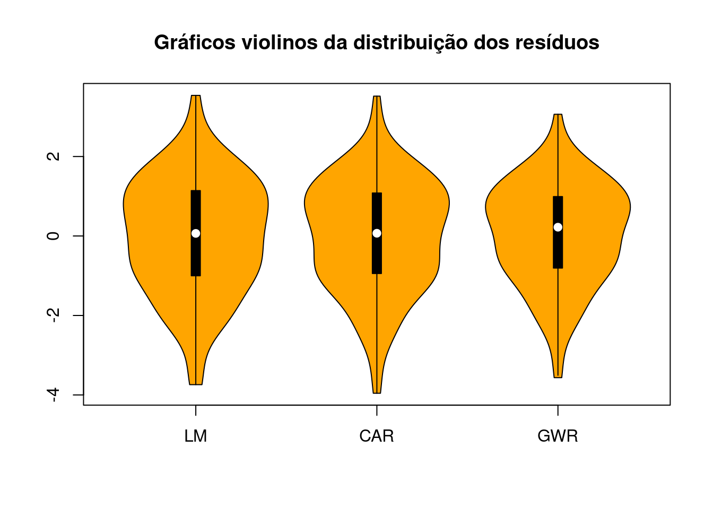
Mapeando os resíduos dos modelos ajustados:
breaks <- c(-4, -1, 0, 1.2, 3.6)
labels <- c("< -1", "-1 a 0", "0 a 1.2", "> 1.2")
PE2$brks.res.lm <- cut(dengue.lm$residuals, include.lowest = FALSE,
right = TRUE, breaks = breaks, labels = labels)
res.lm <- ggplot(PE2) + geom_sf(aes(fill = brks.res.lm),
color = "black", size = 0.2) + ggtitle("Resíduos - LM") +
scale_fill_discrete_sequential(palette = "Purple-Yellow",
c1 = 80, c2 = 30, l1 = 30, l2 = 90, p1 = 0.2,
p2 = 1.5, na.value = "grey75", drop = FALSE,
name = "") + theme_void()
PE2$brks.res.car <- cut(dengue.car$fit$residuals, include.lowest = FALSE,
right = TRUE, breaks = breaks, labels = labels)
res.car <- ggplot(PE2) + geom_sf(aes(fill = brks.res.car),
color = "black", size = 0.2) + ggtitle("Resíduos - CAR") +
scale_fill_discrete_sequential(palette = "Purple-Yellow",
c1 = 80, c2 = 30, l1 = 30, l2 = 90, p1 = 0.2,
p2 = 1.5, na.value = "grey75", drop = FALSE,
name = "") + theme_void()
PE2$brks.res.gwr <- cut(results$residuos, include.lowest = TRUE,
right = TRUE, breaks = breaks, labels = labels)
res.gwr <- ggplot(PE2) + geom_sf(aes(fill = brks.res.gwr),
color = "black", size = 0.2) + ggtitle("Resíduos - GWR") +
scale_fill_discrete_sequential(palette = "Purple-Yellow",
c1 = 80, c2 = 30, l1 = 30, l2 = 90, p1 = 0.2,
p2 = 1.5, na.value = "grey75", drop = FALSE,
name = "") + theme_void()
ggpubr::ggarrange(res.lm, res.car, res.gwr, ncol = 1,
common.legend = TRUE, legend = "right")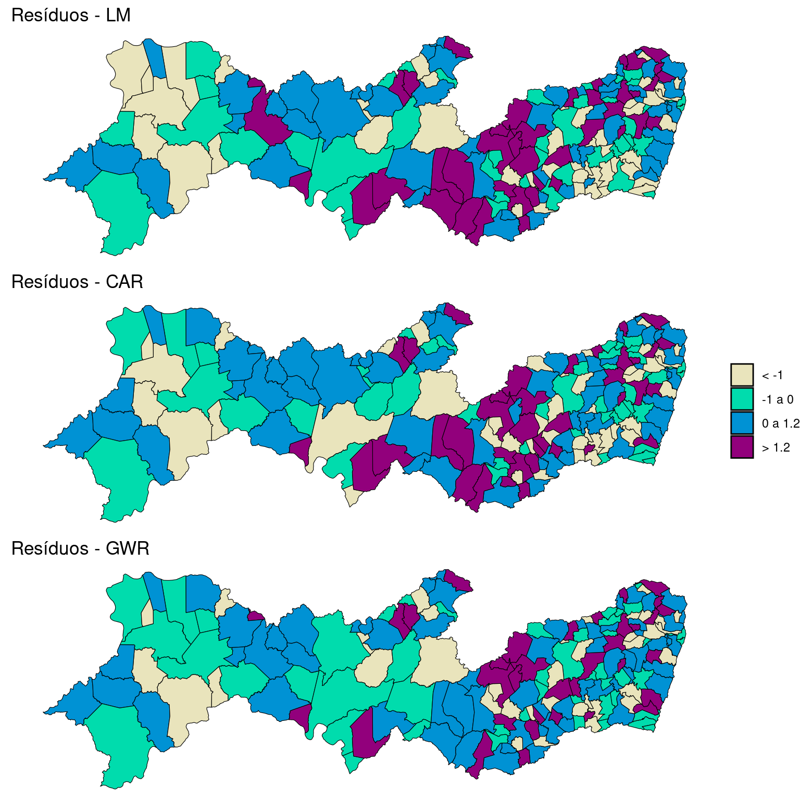
15.7 Bibliografia sugerida
Trevor C. Bailey , Anthony C. Gatrell Routledge. Interactive Spatial Data Analysis. 1995.
Lance A. Waller, Carol A. Gotway. Applied Spatial Statistics for Public Health Data. Wiley-Interscience 1St ed. 2004.
Roger S. Bivand, Edzer Pebesma , Virgilio Gomez-Rubio Springer. Applied Spatial Data Analysis with R. 2nd ed. 2013
Online: